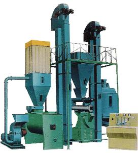
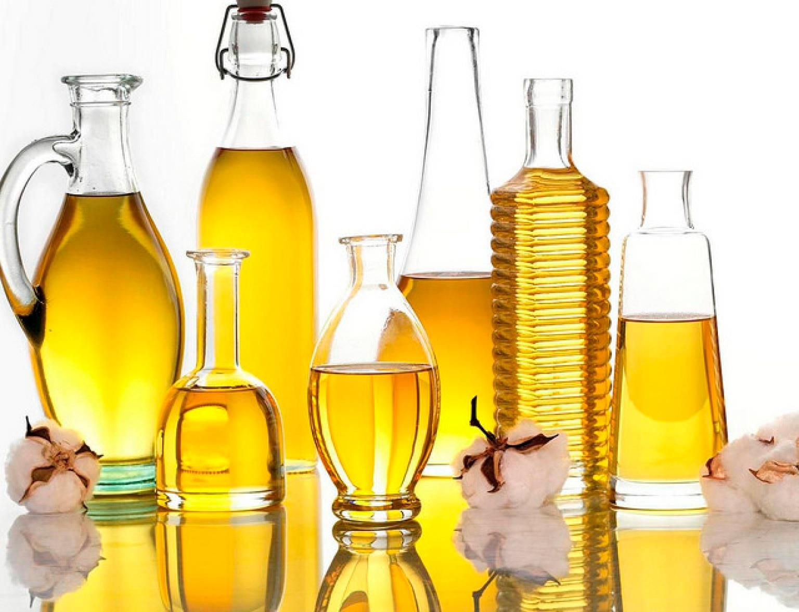
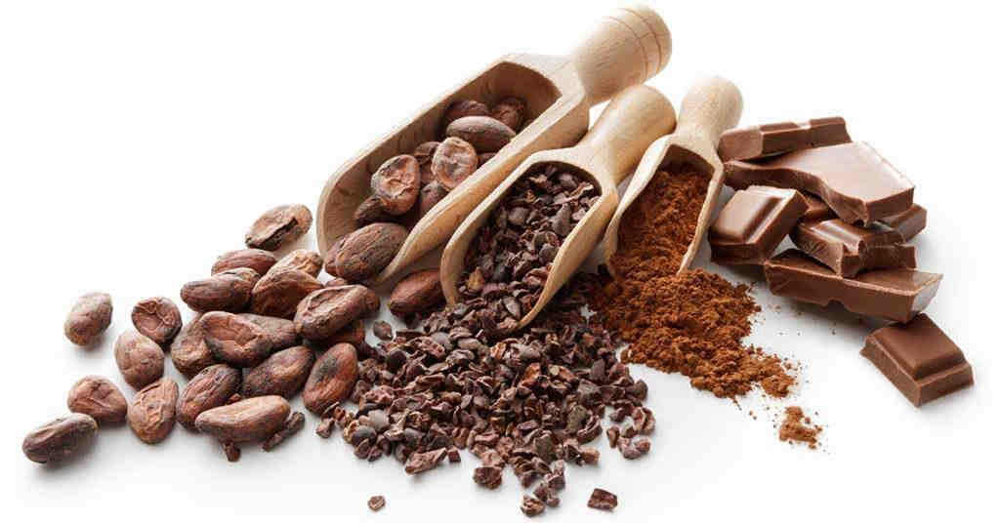
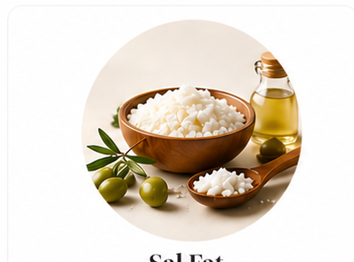
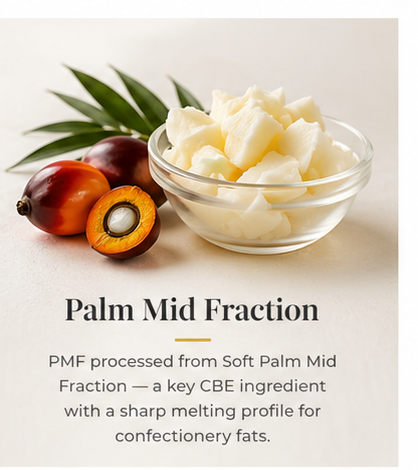
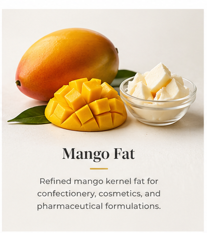
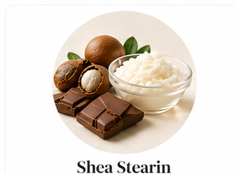
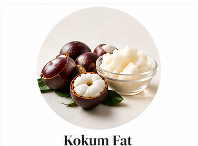
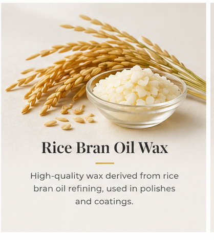
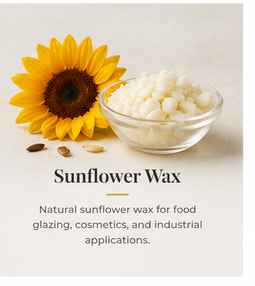

From sustainably sourced forest seeds to precision-refined exotic fats. Explore our complete product portfolio and manufacturing process.
Three core categories spanning vegetable oil refining, exotic fat fractionation, and specialty by-products.
From forest floor to finished product: a vertically integrated process developed through years of in-house R&D.
Raw materials such as Sal, Mango, and Kokum seeds are collected from the forests of Chhattisgarh, Odisha, Madhya Pradesh, and Jharkhand. This provides sustainable income to tribal communities for 80+ days a year, supporting over 11 million forest dwellers.

Seeds are processed through our pre-press expeller plant to extract crude oil. Our facility is strategically located at the pithead of key raw materials, giving us an outright cost and quality advantage over competitors.

Crude oils undergo neutralization, bleaching, and deodorization (NBD) in our refinery,recently enhanced from 750 MT to 1,200 MT/month capacity in FY25. This removes impurities, free fatty acids, and odors to produce food-grade refined oils and fats.
Our proprietary in-house developed acetone fractionation technology, one of very few globally, separates refined fats into stearin and olein fractions. Current capacity is 600 MT/month, scaling to 1,000 MT/month. This niche technology gives us a clear competitive edge over Indian and international competitors.

Every batch undergoes rigorous laboratory testing to meet ISO 22000, Halal, and Kosher standards. Products are packaged and exported to clients in the UK, Malaysia, Europe, and Africa with cash-against-documents terms.

Derived from Sal Seeds (Shorea Robusta, oil content 14.8%), Sal Fat contains symmetrical triglycerides making it particularly useful in the food sector. It forms the primary ingredient for Cocoa Butter Equivalent (CBE), soap making oils, and Vanaspati.
Fractionated product of Sal Fat produced by our proprietary acetone fractionation process. Stearin obtained is 55% to 65% of the Sal Fat taken initially. Harder than cocoa butter, it can be used easily as a substitute in making Cocoa Butter Equivalents and Replacers.

Produced by processing Soft Palm Mid Fraction (SPMF), our Palm Mid Fraction is a high-value specialty fat with a sharp melting profile. PMF is widely used as a key ingredient in Cocoa Butter Equivalents (CBE) and confectionery fat formulations alongside Sal Stearin.
The liquid fraction obtained when Sal Fat is fractionated. Liquid at room temperature with a portion forming solid lumps, Sal Oleine is an effective emollient used in skincare products and cosmetics.

Extracted from Mango Seeds (Mangifera indica, oil content 3.7-12.6%) collected from forest areas and surrounding villages. Mango Fat, combined with cocoa butter, is used in western countries for chocolate making. Mango Stearin is ideal for CBE blends.

Produced from Shea Seeds (Vitellaria paradoxa, oil content 45%+) sourced from West Africa (Nigeria, Ghana, Ivory Coast). Shea butter's heavier carbon molecules result in a high melting point of 37.8°C. Shea butter processing is set to commence from December 2026 at our facility.

A natural hardstock sustainably sourced from Kokum seeds. Kokum Fat is prized for its unique fatty acid profile, making it ideal for confectionery formulations, cosmetic products, and as a natural alternative in specialty fat blends.

Extracted from premium grade rice bran containing 15-20% oil. Rice Bran Oil is considered a healthy cooking oil with cholesterol-lowering properties, containing vitamins, antioxidants, and is trans fat free. De-oiled rice bran cake is used in cattle and aqua feed.

A natural, non-hydrogenated wax obtained as a by-product during winterization of sunflower oil. High melting, odorless, cream to light yellowish in color. Sunflower wax is replacing carnauba wax in many applications.
In-house developed acetone fractionation technology,niche and not readily available globally. Even Indian competitors don't have this technology.
Plant located at the pithead of key raw material (Sal Seeds), giving us an outright cost and logistics advantage over distant competitors.
Developing enzymatic technology for processing exotic fats,an untapped approach that could open new doors for CBE production from high oleic sunflower oil.
Specialized trained operators to run our proprietary systems, not easily obtainable, giving us a competitive edge in people and process quality.
Request samples, specifications, or pricing for any product in our range.